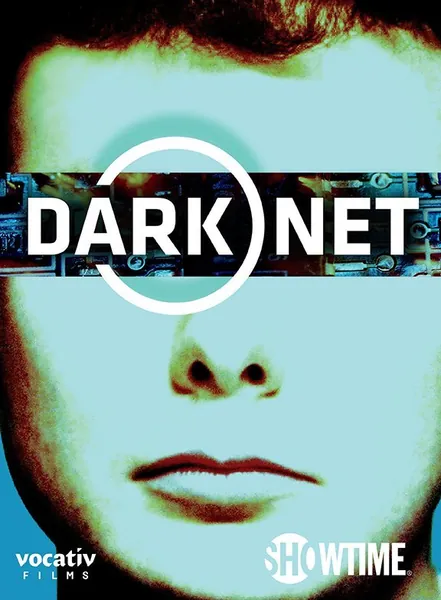

Даркнет
Dark Net
2016
Документальный
Антология невидимых сторон цифровой жизни: киборги с имплантатами, торговля органами в сети, криптовалюта в даркнете, дети, которых вместо няни воспитывает iPad. Каждый эпизод связывает воедино технологии и человеческое тело, показывая, что происходит с человеком, когда жизнь перемещается в онлайн. По стилистике проект ближе к клипу в жанре индастриал, чем к классическому документальному фильму, — и именно в этом его сильная сторона.
Описание на английском
An anthology of the invisible sides of digital life: cyborgs with implants, organ trade over the network, crypto in the darknet, children raised with an iPad instead of a nanny. Each episode connects technology and the body: what happens to a person when life moves online. Stylistically closer to an industrial music video than a classic documentary — and that is its strength.